Un chauffage solaire pour une maison passive
Grâce à une isolation et une étanchéité très performantes, une maison passive n'a besoin que de très peu de chauffage. Le client voulait un apport de chaleur à faible impact environnemental. La solution retenue : des panneaux solaires thermiques qui alimentent des ballons de stockage, eux-mêmes reliés au plancher chauffant, avec un appoint électrique pour les périodes défavorables. D'autres panneaux chauffent un ballon dédié à l'eau chaude sanitaire.
La mission a été confiée au bureau d'études Posit.iV ; je l'ai menée en stage au sein du collectif 2051, dans l'équipe chargée de l'étude.
Un montage en auto-vidange
À partir d'un schéma proposé par HélioFrance, j'ai redessiné et adapté le montage sur AutoCAD. Après vérification par mon responsable, le schéma a été validé par HélioFrance.
En auto-vidange, quand la consigne de stockage est atteinte, le système s'arrête : le fluide des panneaux et des tuyaux extérieurs redescend par gravité dans un réservoir, à l'abri du gel et de la surchauffe. C'est ce qui assure la durée de vie de l'installation.
Composition retenue : 6 panneaux solaires, 2 ballons de chauffage de 300 L et 1 ballon ECS de 300 L. Chaque ballon : 85 °C maximum, pertes de 1,2 kWh/24 h à 60 °C.

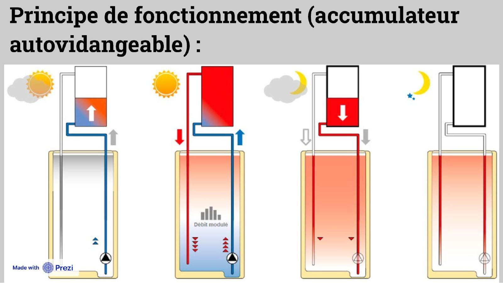
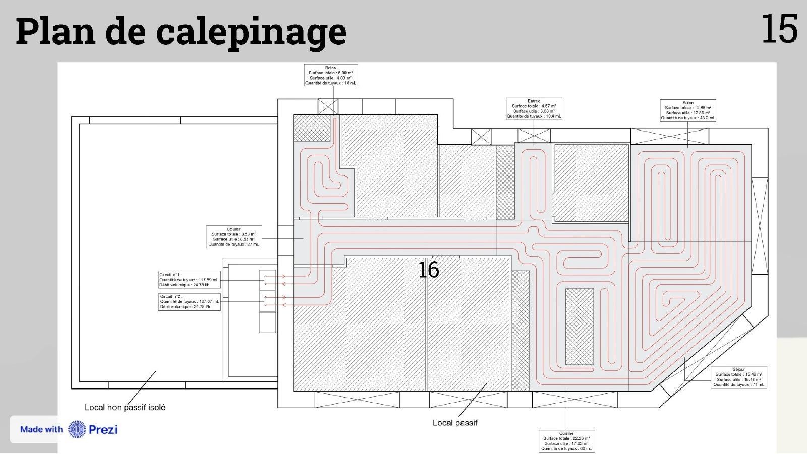
Combien de temps la maison tient-elle sans soleil ?
Dans le pire scénario (panneaux endommagés, régulateur en panne, mauvais temps persistant), les ballons ne sont plus alimentés. J'ai construit un fichier Excel pour calculer combien de temps la maison reste à 20 °C sur la seule chaleur stockée, à partir des données des constructeurs et du logiciel PHPP : surfaces déperditives, isolation, caractéristiques des ballons, intérieur à 20 °C et extérieur à −2,3 °C. Chaque résultat était vérifié par mon responsable avant d'être intégré à l'étude.
Deux ballons pour un confort assuré
La fourchette correspond aux hypothèses pessimiste et optimiste sur les pertes. Compte tenu de la situation géographique, la préconisation a été de prévoir deux ballons de stockage de 300 L.
Livrables : schéma de principe, note de dimensionnement (ballons, capteurs), simulation du temps d'autonomie et préconisation de configuration.
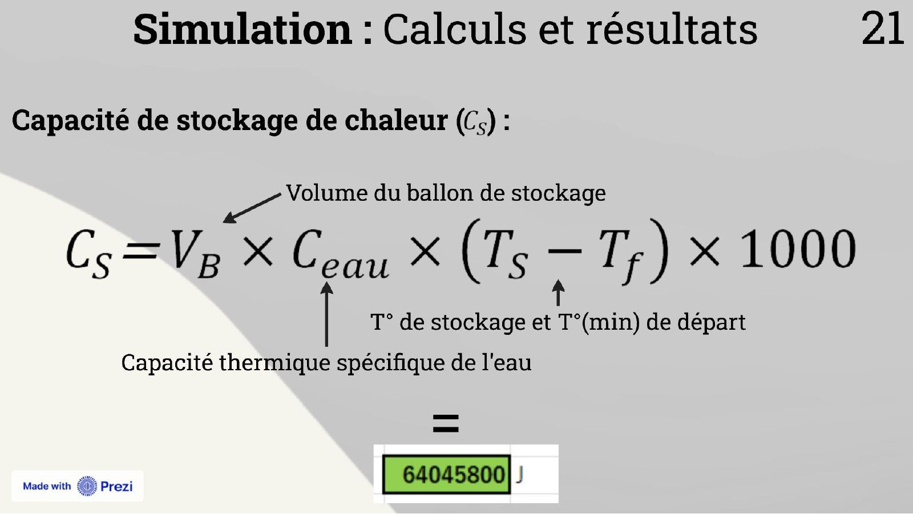
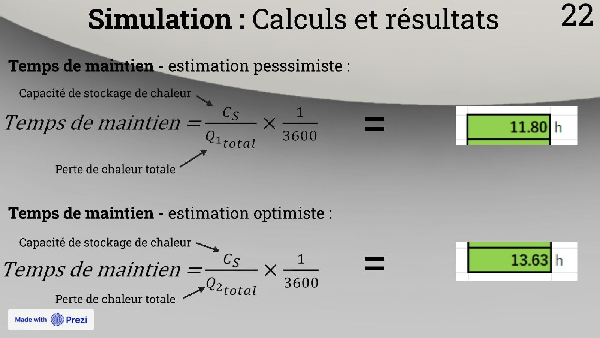
La présentation complète
Diapositives de ma soutenance de stage (BTS FED), partie étude technique. Cliquez sur une diapositive pour l'agrandir, puis naviguez avec les flèches.
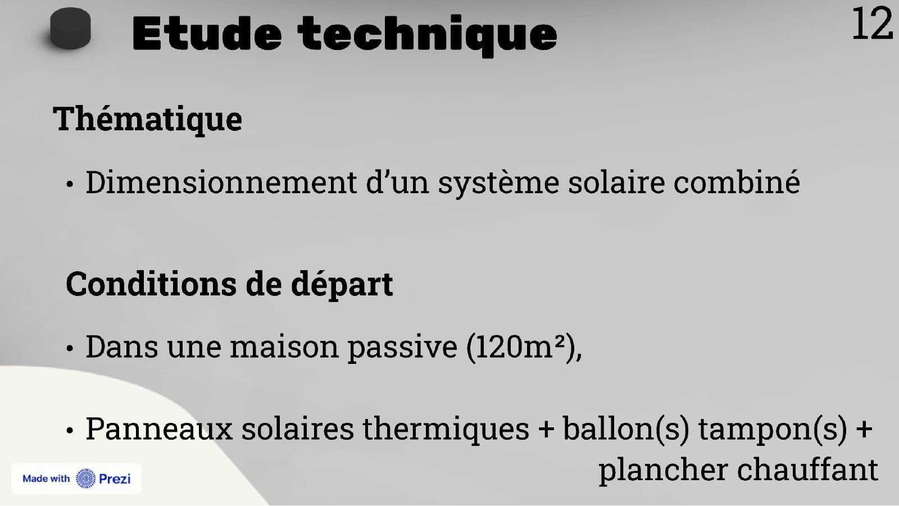
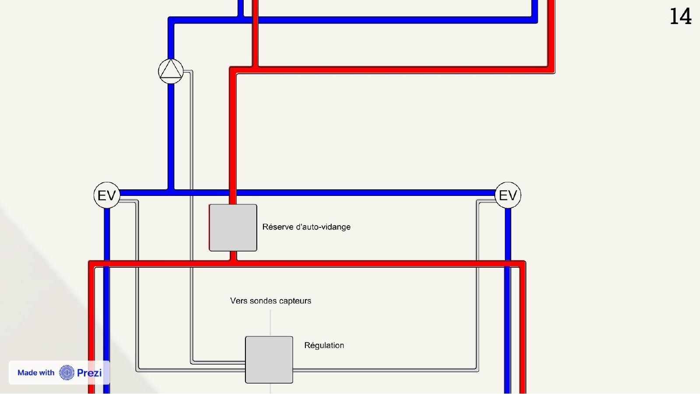
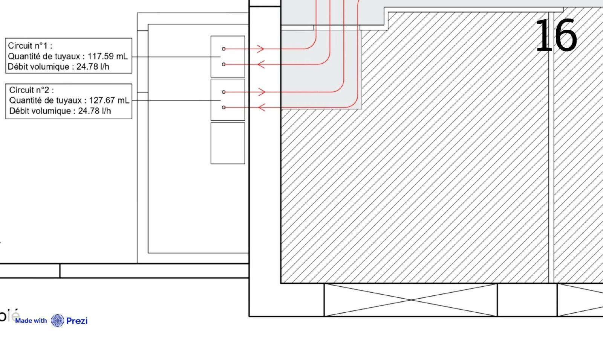
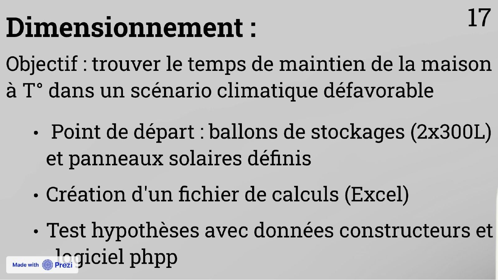
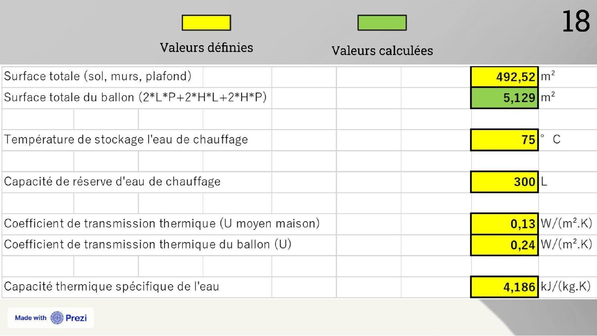
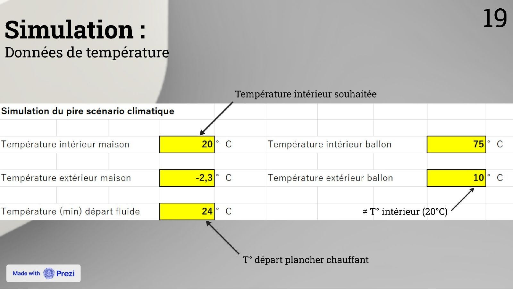
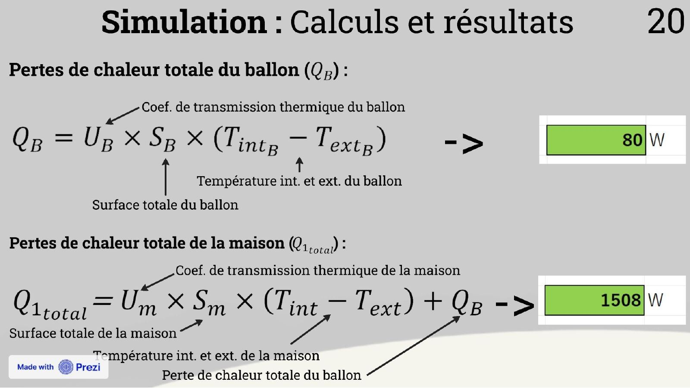
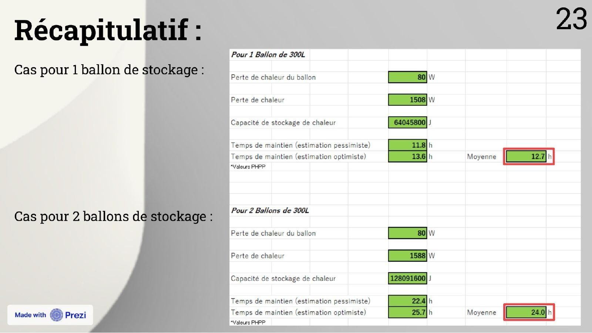